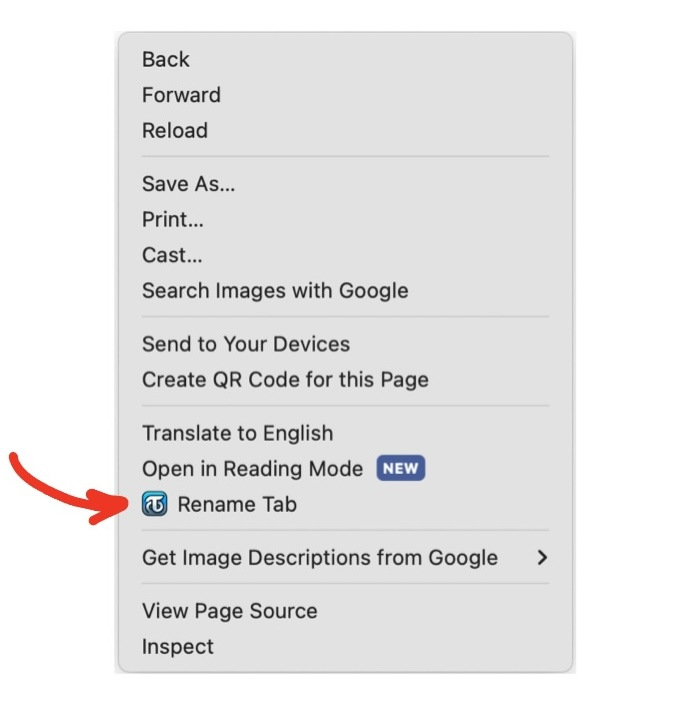
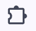
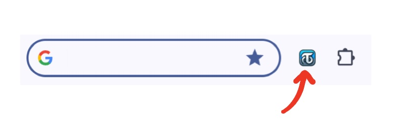
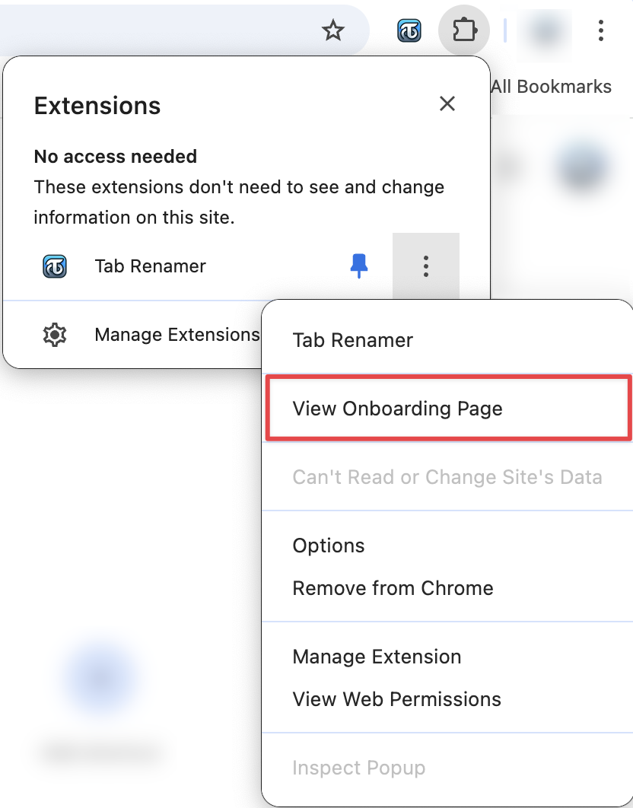

Welcome to Tab Renamer!
Customize your tab titles and favicons for a more organized browsing experience.
Key Features
- ✏️ Tab Renaming: Open a dialog to rename any tab with a simple keyboard shortcut.
- 🎨 Favicon Customization with Emojis: Choose from a wide range of emojis using the built-in emoji picker to replace each tab's favicon, adding a custom visual element to each tab to make them more distinguishable.
- 🔄 Persistent Names: Your custom tab names and favicons are stored and will be preserved even when you close and reopen the tabs or even the entire window.
How to Use
There are three ways to activate the extension on a page:
-
Keyboard Shortcut:
The default shortcut is Ctrl+Shift+Y or Command+Shift+Y on Mac,
but you should double-check because sometimes this is not set on installation as it might conflict with existing shortcuts.
To set the shortcut yourself, go to chrome://extensions/shortcuts and look for 'Tab Renamer'.

- Context Menu Item: Right-click anywhere on a webpage and select 'Rename Tab' from the context menu. Note that you should right-click inside the webpage, not on the tab itself. (I wish chrome would let me modify the context menu shown when right-clicking on a tab! 🥲) 
- Action Icon: Click on the extension icon under the puzzle piece () icon to the right of the address bar. If you have pinned the extension, you can directly click the extension icon on the toolbar without needing to click on the puzzle piece icon first. 
Reverting to Original Values
The user interface includes an input box to pick the new tab title, and an emoji picker to pick the new favicon. Leaving any of them empty will revert the corresponding value to its original state.
Returning to this page
Don't worry about forgetting any of the instructions on this page! You can return here by right-clicking the same extension icon mentioned above (), clicking the three-dots icon next to Tab Renamer, and selecting "View Onboarding Page". 
A Note from the Developer
Hi there 👋 ! I'm an independent developer who created Tab Renamer because I felt renaming and changing the favicon of my tabs could help me a lot in keeping my work organized. I really hope you find it useful, too! :)
Your feedback is genuinely valuable to me. If you have any suggestions or issues to report please don't hesitate to reach out via email or on BlueSky. I'll do my best to incorporate your feedback into future updates.
If you enjoy using Tab Renamer, I would really appreciate your review on the Chrome Web Store! (And, if you feel like it, you could also Buy Me a Coffee!)
Happy browsing! ❤️